Practical Exercise on Linux File and Folder Operations
| Linux |
Background
This exercise focuses on practicing file system management in Linux,by creating, renaming, moving, copying, and deleting them.
- Create in your user’s home the following file and folder hierarchy (\ = folder; – = file):
\Exercitiu1
\Retelistica
\Switch
– numar_porturi.jpg
– adresaMAC
– vitezaPort
-numarDevice
-versiuneOS
\Router
\Geografie
\Continente
\Europa
\Europa de Est
\Romania
\Bulgaria
\Asia
– harta romaniei.jpg
– harta europei.png
\Istorie
\Protocoale de Rutare
– OSPF.html
– EIGRP.pdf
– Mihai Viteazul.jpg
– A I Cuza.png
\Programare
\Python
\C\C++
– Introducere in algoritmi.pdf
– Dennis Ritchie.jpg
– tema_backtracking.c
\JAVA

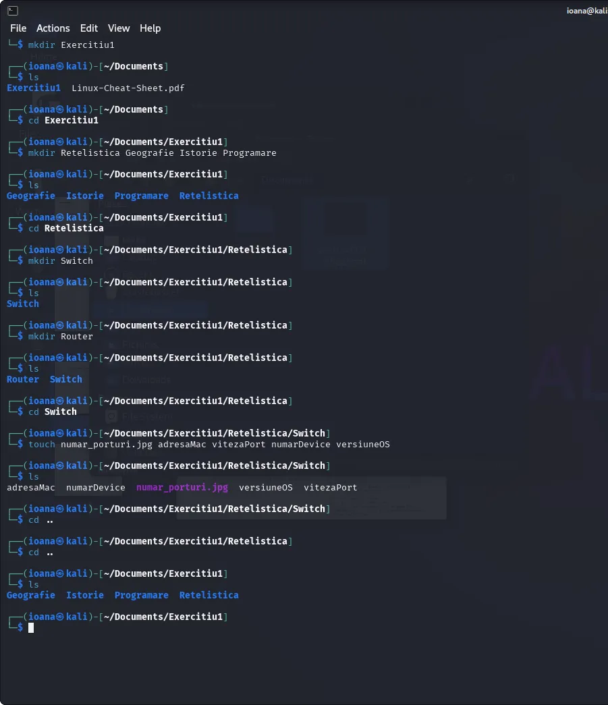

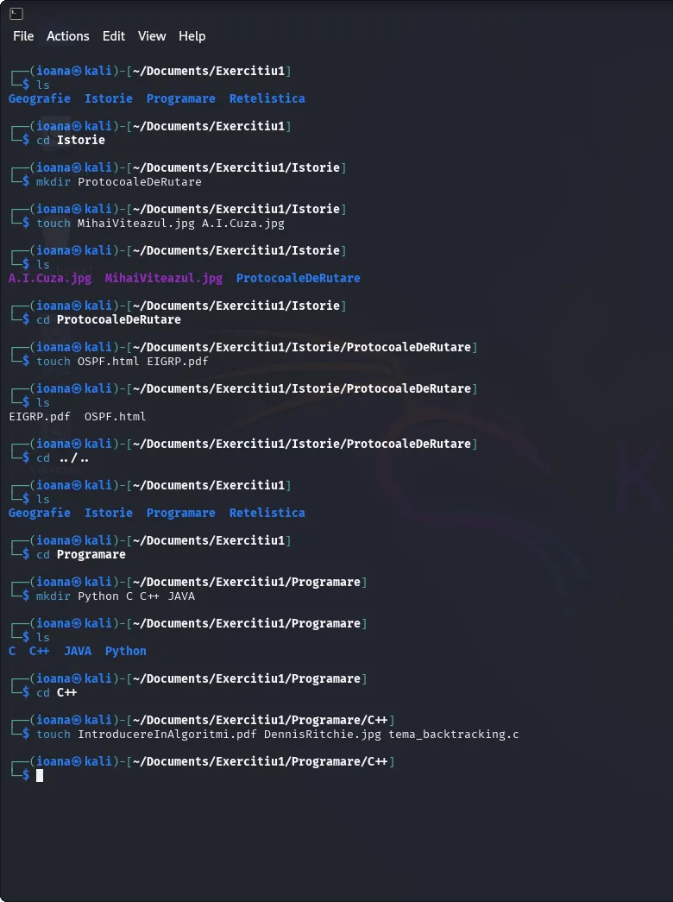
Creating directories and files using the commands mkdir for directories and touch for files

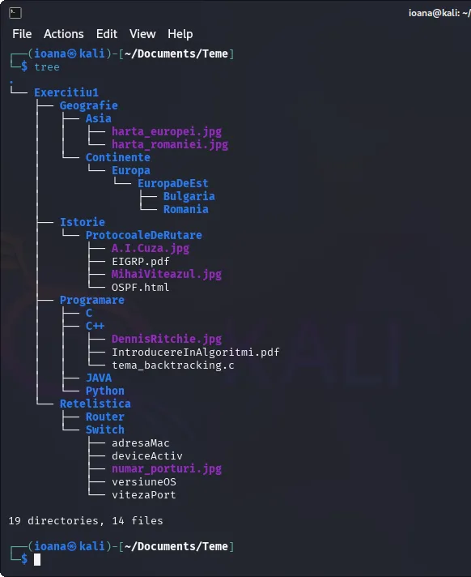
Final tree
- Rename the file ‘numarDevice’ to ‘deviceActiv’.

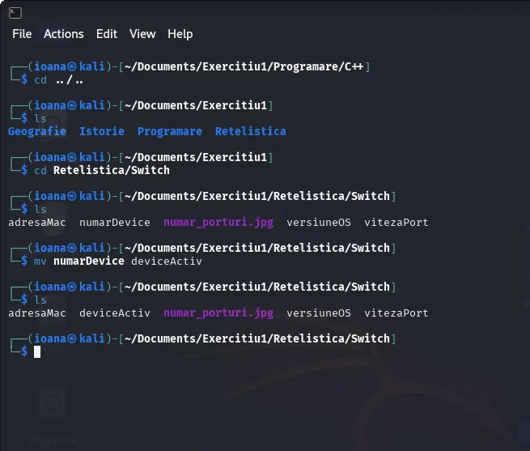
- Move ‘harta romaniei’ to the corresponding country folder inside the ‘Geografie’ folder.

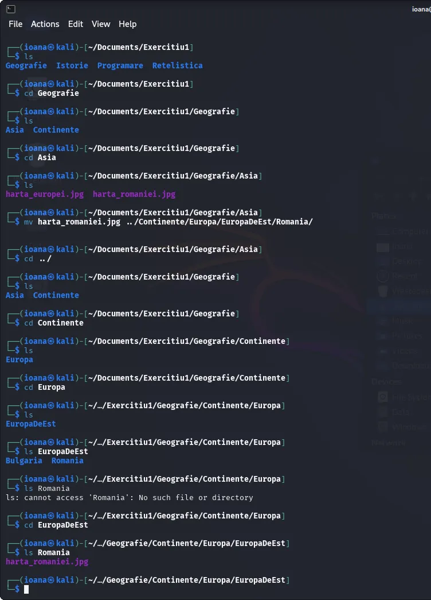
Using mv command to move folder
4. Remove folder ‘JAVA’

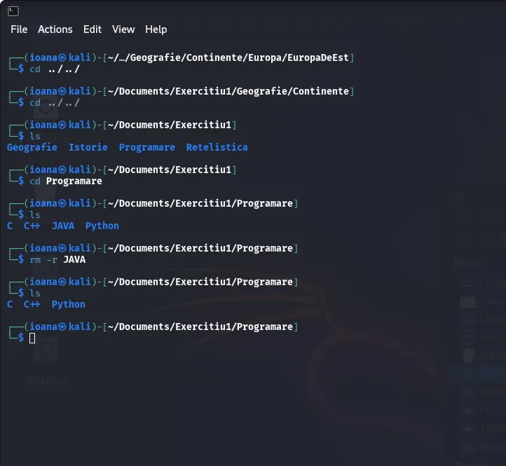
Using rm -r command to remove folder JAVA
- Move the entire folder named ‘Programare’ (including all its contained files) into the ‘Retelistica’ folder.

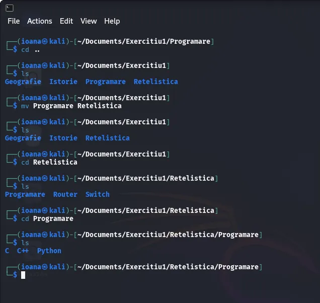
Using mv command to move folder
- Create a folder named ‘Imagini’ inside ‘/home/user/Teme’ where you copy all the files with the .jpg extension from the file hierarchy created in exercise 1.

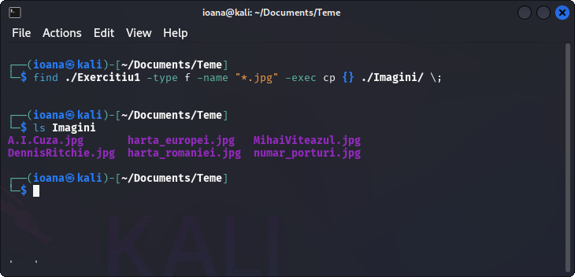
- Using the graphical interface (with the mouse), do the same this time inside the folder ‘~/Teme/Imagini2’ which you create.

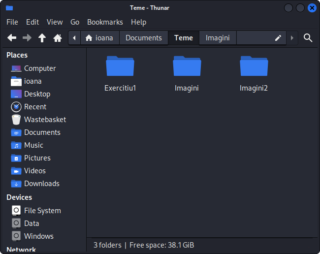

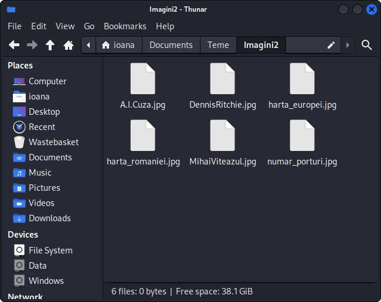
- Delete all the files, from the entire previously created hierarchy, whose names end with an extension (e.g., jpg, png, html, etc.).

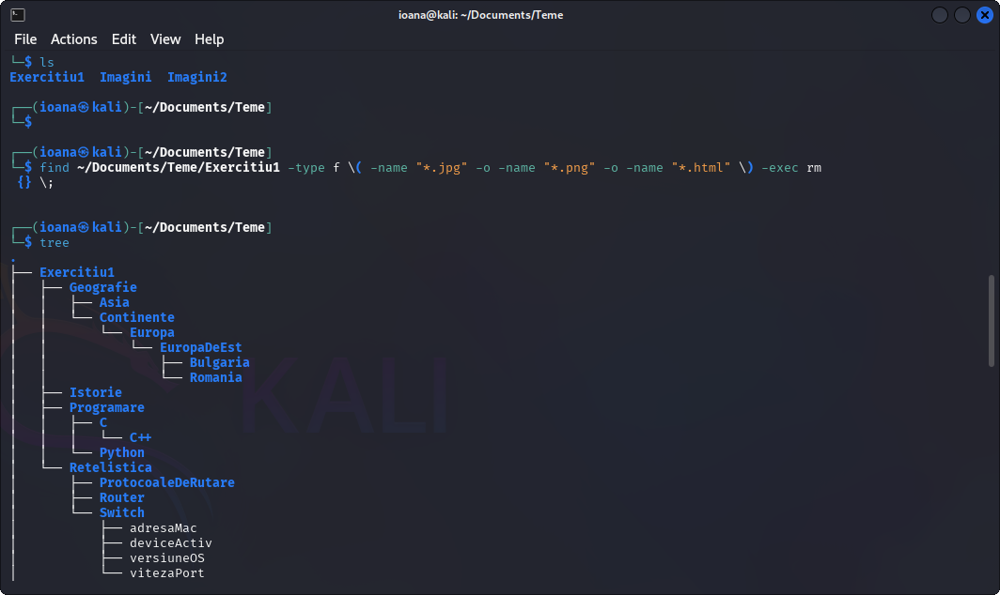
- Write the text “Linux Rulz” into a file in the ‘Downloads’ folder inside ‘home’ using the graphical interface. Then from the command line, display the contents of the file.

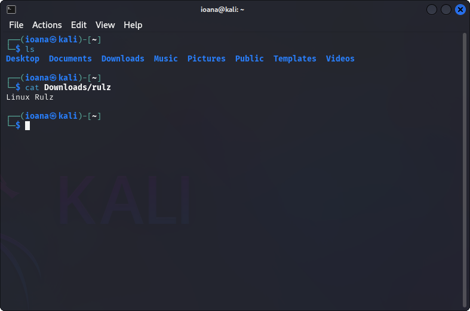

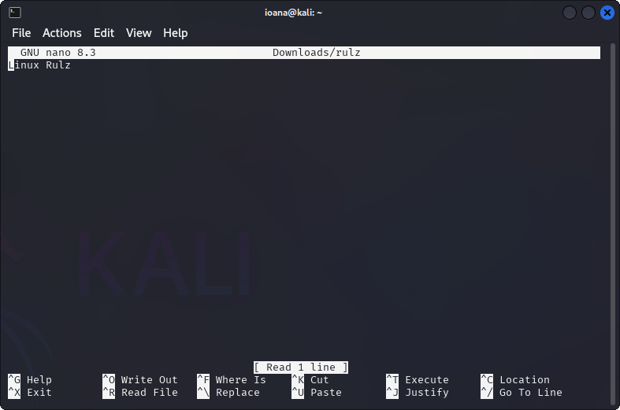
- Although it was not specified in the requirements, I also moved the subfolder ‘Protocoale de Rutare’ from the ‘Istorie’ folder to the ‘Retelistica’ folder for better organization and consistency.
The final structure of my directory tree is shown in the screenshot below.

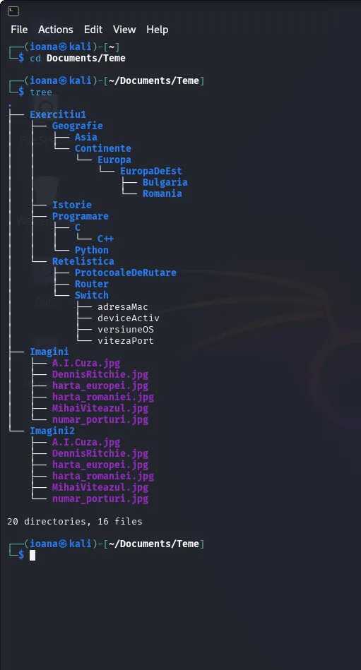
Through this exercise, I gained practical experience in file system navigation and manipulation, which are essential skills for efficient Linux system management.